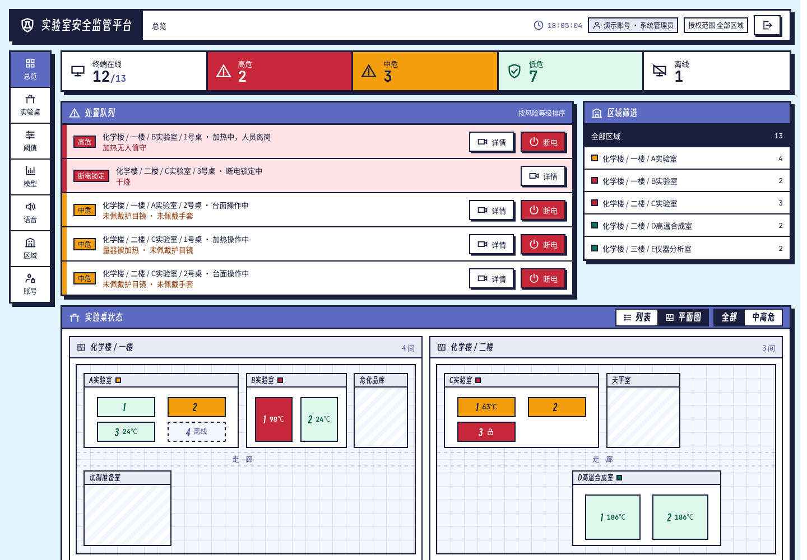

放在每一张实验桌上的安全终端
灾难发生时，它只能看着；灾难发生前，它也拦不住。在实验室安全这件事上，传统监控往往是失能的。
天花板上的镜头拍到的是整个房间。一个房间几十路画面，也没有人能每一秒都盯着。
烧杯还是量筒？
离桌边多远？
现在多少度？
在事故发生之前看出苗头。先提醒人；提醒不管用、危险真的来了，再由硬件直接切断加热电源。
3 秒内六成以上画面认出同一个问题，才算确认，一闪而过的误识别不会报警。
在开发板 NPU 上实测，每帧
人员模型 120 ms，器皿模型 116 ms，结果与原模型一致
摘下头罩、护目镜、口罩，拿出一个苹果。
同学，记得戴好护目镜哦，眼睛只有一双。
实验区不能吃东西喝水哦，请到室外再吃。
做这套系统的出发点，是从根本上减少火灾和伤害。正在做实验的同学，就是它最直接的用户。
人员模型、器皿模型、传感器和温度预测放在一起打分。分界线可以按实验室调整。
030 中危70 高危100整理器皿时没戴手套
小屏温和提醒：佩戴手套加热时台面放着量筒，没戴护目镜
移出量器，改用烧杯或锥形瓶加热越过沸点还在升温，快烧干了
严厉干预：立即降低火力或补充液体越靠近现场，提醒越早、越细；越往上走，提醒越少、越准。
它读取交叉验证的结果，写出原因、步骤和手册条款。它没有任何控制电源的工具。
没收到确认就重发。真机实测，断电指令一来一回的中位时间是 4.9 ms。

基于双摄协同的实验室安全事前干预监测系统